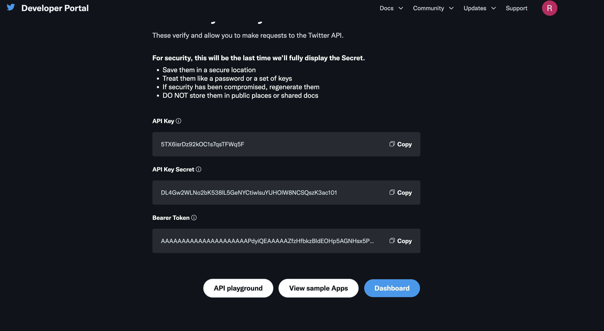
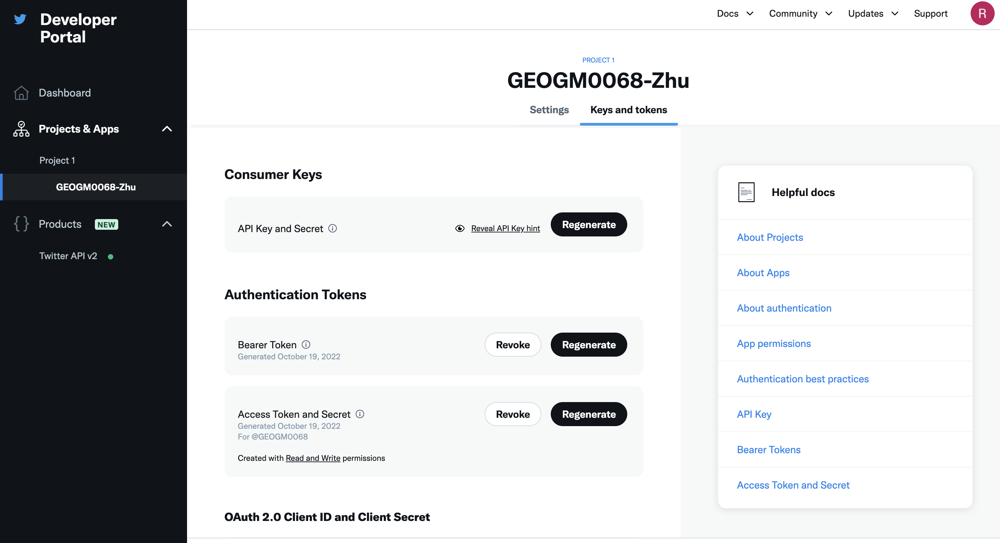
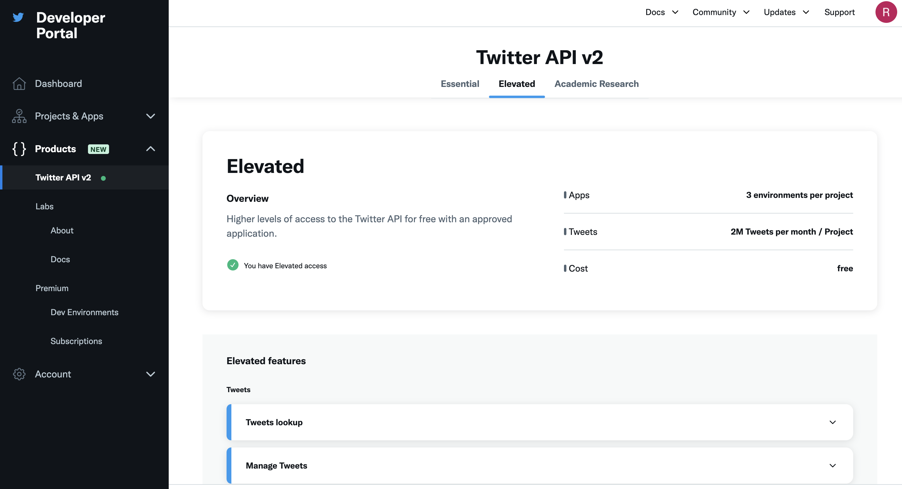
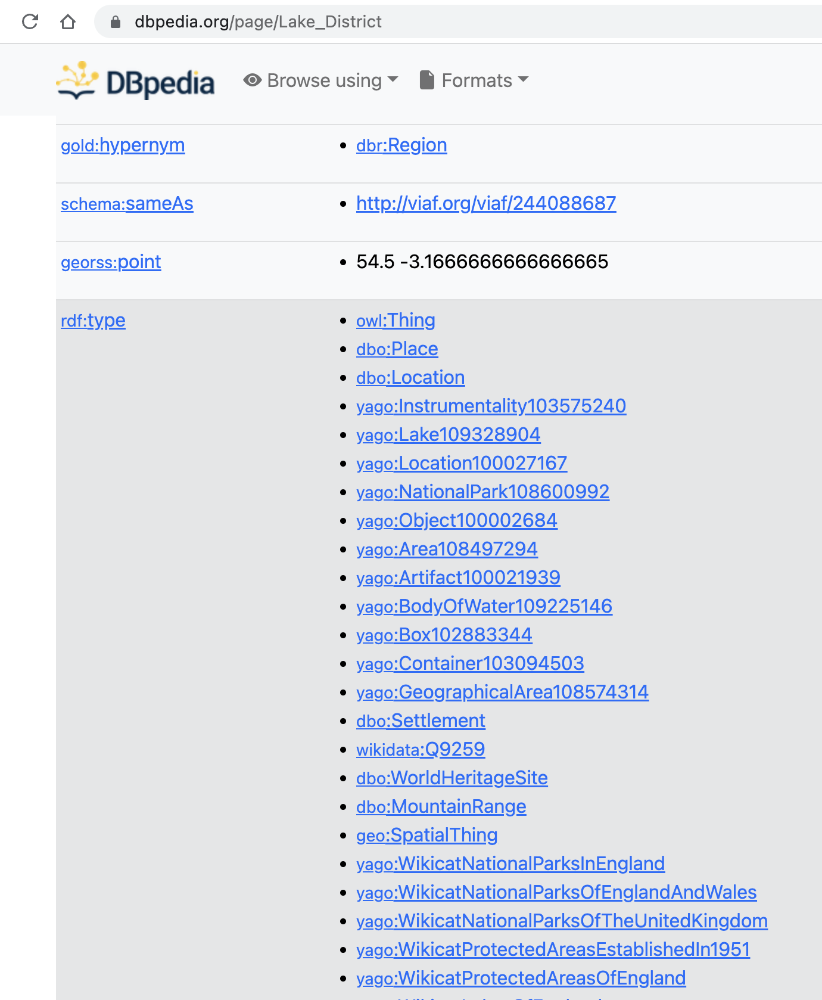

Lab 02: Georefereing Location-based Social Media#
In this tutorial, we will learn:
How to extract information (e.g., tweets) from location-based social media (e.g., Twitter)
How to identify locational information (e.g., place name) from text-based data (e.g., tweets, newspapers)
How to refer the identified location to metric-based coordinates on the surface of the earcth
Several libraries/packages are needed in this tutorial. Use pip or conda to install them:
tweepy: this is library to access the Tweeter API
spaCy: this is the library to do natural lanuguage processing
spacy-dbpedia-spotlight: a small library that annotate recognized entities from spaCy to DBpedia enities.
Part 1-2: Extracting (geo)text from Twitter#
This part explains how to extract text-based unstructured information from the social media Twitter via its API. Similar pipline can be used to extract information from other types of social media/Web services (e.g., Foursquare, Yelp, Flickr, Google Places, etc.).
Twitter is a useful data source for studying the social impact of events and activities. In this part, we are going to learn how to collect Twitter data using its API. Specifically, we are going to focus on geotagged Twitter data.
First, Twitter requires the users of Twitter API to be authenticated by the system. One simple approach to obtain such authentication is by registering a Twitter account. This is the approach we are going to take in this tutorial.
Go to the website of Twitter: https://twitter.com/ , and click “Sign up” at the upper right corner. You can skip this step if you already have a Twitter account.
After you have registered/logged in to your Twitter account, we are going to obtain the keys that are necessary to use Twitter API. Go to https://apps.twitter.com/ , and sign in using the Twitter account you have just created (sometimes the browser will automatically sign you in).
After you have signed in, click the button “Create New App”. Then fill in the necessary information to create an APP. Note that you might need to record your phone number in your Twitter account in order to do so. If you don’t like it, feel free to remove your phone number from your account after you have done your project.
Then you will be directed to a page (see example below) asking you for a name of your App. Give it a name that you want.
Click Get keys. It will then generated API Key, API Key Secret, and Bearer Token (see below for an example). Make sure you copy and paste them into a safe place (e.g., a text editor). We need these authentications later.

Next, we also need to obtain the Access Token and its key. To do so, go to the Projects & Apps–> Select your App. Then click Keys and tokens, and then click Generate on the right of Access Token and Secret (see below). Again, make sure you record them in a safe place. We need them later. Note that if for some reasons, you lose your tokens and secrets, this page is where you regenerate them.

Once you have your Twitter app set-up, you are ready to access tweets in Python. Begin by importing the necessary Python libraries.
import os
import tweepy as tw
import pandas as pd
To access the Twitter API, you will need four things from your Twitter App page. These keys are located in your Twitter app settings in the Keys and Access Tokens tab.
api key
api key seceret
access token
access token secret
Below I put in my authentications. You should use yours! But remember to not share these with anyone else because these values are specific to your App.
api_key= 'ADsWr3cgAce13adabpK0aVKh5'
api_key_secret= '9EPHVN4OdcsnizwMIu5zvNarbWfybuXMQou6Mz0WDEZehTynMz'
access_token= '1582847729486684180-FqKFjuAorSXQlLcQ8f8niWK7HyDWMN'
access_token_secret = 'TSjdYCWluaenbiXb2cxSA6rR7AxTkEPzDJ1Znd8J4225q'
With these authentications, we can next build an API variable in Python that build the connection between this Jupyter program and Twitter:
auth = tw.OAuthHandler(api_key, api_key_secret)
auth.set_access_token(access_token, access_token_secret)
api = tw.API(auth, wait_on_rate_limit=True)
For example, now we can send tweets using your API access. Note that your tweet needs to be 280 characters or less:
# Post a tweet from Python
api.update_status("Hello Twitter, I'm sending the first message via Python to you! I learnt it from GEOGM0068. #DataScience")
# Your tweet has been posted!
If you go to your Twitter account and check Profile, you will see the tweet being posted! Congrats for your first post via Python!
Note that if you see errors like “453 - You currently have Essential access which includes access to Twitter API v2 endpoints only. If you need access to this endpoint, you’ll need to apply for Elevated access via the Developer Portal. You can learn more here: https://developer.twitter.com/en/docs/twitter-api/getting-started/about-twitter-api#v2-access-leve”. It means you need to elevate your access. What you need to do is (1). Go to Products –> Twitter API v2; (2). click the tab “Elevated” (or “Academic Research” if you need it for your dissertation later); (3). Click Apply, then file the form (you can choose No for many of the questions). See screenshot below for (1) and (2):

Next, let’s retrieve (search) some tweets that are about #energycrisis that are posted currently in English. There are going to be many posts returned. To make it easy to illustrate and to save some request (note you have a limited number of requests via this API), we only request 5 from the list.
search_words = "#energycrisis"
tweets = tw.Cursor(api.search_tweets,
q=search_words,
lang="en").items(5)
tweets
Here, you see a an object that you can iterate (i.e. ItemIterator) or loop over to access the data collected. Each item in the iterator has various attributes that you can access to get information about each tweet including:
the text of the tweet
who sent the tweet
the date the tweet was sent
and more. The code below loops through the object and save the time of the tweet, the user who posted the tweet, the text of the tweet, as well ast the user location to a pandas DataFrame:
import pandas as pd
# create dataframe
columns = ['Time', 'User', 'Tweet', 'Location']
data = []
for tweet in tweets:
data.append([tweet.created_at, tweet.user.screen_name, tweet.text, tweet.user.location])
df = pd.DataFrame(data, columns=columns)
We can further save the dataframe to a local csv file (structured data):
df.to_csv('tweets_example.csv')
Note that there is another way of writing the query to Twitter API, which might be more intuitive to some users. For example, you can replace tweets = tw.Cursor(api.search_tweets,q=search_words,lang="en").items(5) to something like:
tweets2 = api.search_tweets(q=search_words,lang="en", count="5")
data2 = []
for tweet2 in tweets2:
data2.append([tweet2.created_at, tweet2.user.screen_name, tweet2.text, tweet2.user.location])
df2 = pd.DataFrame(data2, columns=columns)
To learn more about the key function search_tweets(), check its webpage here. Please try yourself to set up some other parameters to see what you can get.
Part 2: Basic Natural Language Processing and Geoparsing#
To extract places (or other categories) from text-based (unstructured) data, we need to do some basic Natural Language Processing (NLP), such as tokenization and Part-of-Speech analysis. All these operations can be done through the library spaCy.
Ideally, you can use the tweets you got from Part 1 to do the experiment. But since sometimes the tweets you get might be very heterogenous and noisy, here we use a clean example (you can also get it from some long news online) to show how to use spaCy in order to make sure all important points are covered in one example.
First make sure you have intsalled and imported spaCy:
import spacy
spaCy comes with pretrained NLP models that can perform most common NLP tasks, such as tokenization, parts of speech (POS) tagging, named entity recognition (NER), transforming to word vectors etc.
If you are dealing with a particular language, you can load the spacy model specific to the language using spacy.load() function. For example, we want to load the English version:
# Load small english model: https://spacy.io/models
# If you see errors like "OSError: [E050] Can't find model 'en_core_web_sm'. It doesn't seem to be a shortcut link, a Python package or a valid path to a data directory.", it means your system has not installed the corresponding language models yet.
# Use the commond to install it: python -m spacy download en
nlp=spacy.load("en_core_web_sm")
nlp
<spacy.lang.en.English at 0x16bb349e0>
This returns a Language object that comes ready with multiple built-in capabilities.
Now let’s say you have your text data in a string. What can be done to understand the structure of the text?
First, call the loaded nlp object on the text. It should return a processed Doc object.
# Parse text through the `nlp` model
my_text = """The economic situation of the country is on edge , as the stock
market crashed causing loss of millions. Citizens who had their main investment
in the share-market are facing a great loss. Many companies might lay off
thousands of people to reduce labor cost"""
my_doc = nlp(my_text)
type(my_doc)
spacy.tokens.doc.Doc
Hmmm, it is a Doc object. But wait, what is exactly a Doc object?
It is a sequence of tokens that contains not just the original text but all the results produced by the spaCy model after processing the text. Useful information such as the lemma of the text, whether it is a stop word or not, named entities, the word vector of the text, and so on are pre-computed and readily stored in the Doc object.
So first, what is a token?
As you have learnt from the lecture. Tokens are individual textual entities that make up the text. Typically a token can be the words, punctuation, spaces, etc. Tokenization is the process of converting a text into smaller sub-texts, based on certain predefined rules. For example, sentences are tokenized to words (and punctuation optionally). And paragraphs into sentences, depending on the context.
Each token in spaCy has different attributes that tell us a great deal of information.
Let’s see the token texts on my_doc. The string, which the token represents, can be accessed through the token.text attribute.
# Printing the tokens of a doc
for token in my_doc:
print(token.text)
The
economic
situation
of
the
country
is
on
edge
,
as
the
stock
market
crashed
causing
loss
of
millions
.
Citizens
who
had
their
main
investment
in
the
share
-
market
are
facing
a
great
loss
.
Many
companies
might
lay
off
thousands
of
people
to
reduce
labor
cost
The above tokens contain punctuation and common words like “a”, ” the”, “was”, etc. These do not add any value to the meaning of your text. They are called stop words. We can clean it up.
The type of tokens will allow us to clean those noisy tokens such as stop word, punctuation, and space. First, we show whether a token is stop/punctuation or not, and then we use this information to remove them.
# Printing tokens and boolean values stored in different attributes
for token in my_doc:
print(token.text,'--',token.is_stop,'---',token.is_punct)
The -- True --- False
economic -- False --- False
situation -- False --- False
of -- True --- False
the -- True --- False
country -- False --- False
is -- True --- False
on -- True --- False
edge -- False --- False
, -- False --- True
as -- True --- False
the -- True --- False
stock -- False --- False
-- False --- False
market -- False --- False
crashed -- False --- False
causing -- False --- False
loss -- False --- False
of -- True --- False
millions -- False --- False
. -- False --- True
Citizens -- False --- False
who -- True --- False
had -- True --- False
their -- True --- False
main -- False --- False
investment -- False --- False
-- False --- False
in -- True --- False
the -- True --- False
share -- False --- False
- -- False --- True
market -- False --- False
are -- True --- False
facing -- False --- False
a -- True --- False
great -- False --- False
loss -- False --- False
. -- False --- True
Many -- True --- False
companies -- False --- False
might -- True --- False
lay -- False --- False
off -- True --- False
-- False --- False
thousands -- False --- False
of -- True --- False
people -- False --- False
to -- True --- False
reduce -- False --- False
labor -- False --- False
cost -- False --- False
# Removing stop words and punctuations
my_doc_cleaned = [token for token in my_doc if not token.is_stop and not token.is_punct and not token.is_space]
for token in my_doc_cleaned:
print(token.text)
economic
situation
country
edge
stock
market
crashed
causing
loss
millions
Citizens
main
investment
share
market
facing
great
loss
companies
lay
thousands
people
reduce
labor
cost
To get the POS tagging of your text, you use code like:
for token in my_doc_cleaned:
print(token.text,'---- ',token.pos_)
economic ---- ADJ
situation ---- NOUN
country ---- NOUN
edge ---- NOUN
stock ---- NOUN
market ---- NOUN
crashed ---- VERB
causing ---- VERB
loss ---- NOUN
millions ---- NOUN
Citizens ---- NOUN
main ---- ADJ
investment ---- NOUN
share ---- NOUN
market ---- NOUN
facing ---- VERB
great ---- ADJ
loss ---- NOUN
companies ---- NOUN
lay ---- VERB
thousands ---- NOUN
people ---- NOUN
reduce ---- VERB
labor ---- NOUN
cost ---- NOUN
You will see each word (token) now is associated with a POS tag, whether it is a NOUN, a ADJ, a VERB, or so on … POS often can help us disambiguate the meaning of words (or places in GIR).
Btw, if you don’t know what “ADJ” means, you can use code like:
spacy.explain('ADJ')
'adjective'
You can also use spaCy to do some Named Entity Recognition (including place name identification or geoparsing). For instance:
text='Tony Stark owns the company StarkEnterprises . Emily Clark works at Microsoft and lives in Manchester. She loves to read the Bible and learn French'
doc=nlp(text)
for entity in doc.ents:
print(entity.text,'--- ',entity.label_)
Tony Stark --- PERSON
StarkEnterprises --- ORG
Emily Clark --- PERSON
Microsoft --- ORG
Manchester --- GPE
Bible --- WORK_OF_ART
French --- LANGUAGE
What is “GPE”?
spacy.explain('GPE')
'Countries, cities, states'
spaCy also provides special visualization for NER through displacy. Using displacy.render() function, you can set the style='ent' to visualize. For more interesting visualizations, check displacy documentation
# Using displacy for visualizing NER
from spacy import displacy
displacy.render(doc,style='ent',jupyter=True)
So far, you have learnt the basics of retrieving information from social media like Twitter, as well as basic NLP operations and named entity recognition (geoparsing is part of it). I suggest you to play with what you have learnt so far by using new data (maybe through different APIs) to experiment these functions, changing the parameters of function, combining these skills with what you have learn in Tutorial 1 (e.g., geopandas), etc.
Part 3: Geocoding the recognized place names#
spaCy helps us recognize different categories of tokens from a text, including place names (with tag GPE or LOC), but have not refer these place names into geographical locations on the surface of the earth. In this part, we will explore ways of geocoding text-based place names to geographic coordinates. There are several cool libraries/packages there for us to directly use, which we will cover some in this tutorial. But before that, let’s develop our own geocoding tool first. We might not use it in the future due to its simplicity, but it will help us understand the fundementals behind those technologies, which we have highlighted in our lectures.
First, let’s create a variable storing the text that we want to georeference. The text below is copied from the Physical Geography section from the wikipedia page about the UK. We then use nlp() to convert the text into a nlp object defined by spacy. Having this object, we can then extract place names using the label LOC and/or GPE. Here we use a for-loop to go through all the tokens and only get those that have the two location-related labels, and then save them all into a list called locations. Finally, we transfer such a list into a panda dataframe.
import pandas as pd
UK_physicalGeo = "The physical geography of the UK varies greatly. England consists of mostly lowland terrain, with upland or mountainous terrain only found north-west of the Tees-Exe line. The upland areas include the Lake District, the Pennines, North York Moors, Exmoor and Dartmoor. The lowland areas are typically traversed by ranges of low hills, frequently composed of chalk, and flat plains. Scotland is the most mountainous country in the UK and its physical geography is distinguished by the Highland Boundary Fault which traverses the Scottish mainland from Helensburgh to Stonehaven. The faultline separates the two distinctively different regions of the Highlands to the north and west, and the Lowlands to the south and east. The Highlands are predominantly mountainous, containing the majority of Scotland's mountainous landscape, while the Lowlands contain flatter land, especially across the Central Lowlands, with upland and mountainous terrain located at the Southern Uplands. Wales is mostly mountainous, though south Wales is less mountainous than north and mid Wales. Northern Ireland consists of mostly hilly landscape and its geography includes the Mourne Mountains as well as Lough Neagh, at 388 square kilometres (150 sq mi), the largest body of water in the UK.[12]The overall geomorphology of the UK was shaped by a combination of forces including tectonics and climate change, in particular glaciation in northern and western areas. The tallest mountain in the UK (and British Isles) is Ben Nevis, in the Grampian Mountains, Scotland. The longest river is the River Severn which flows from Wales into England. The largest lake by surface area is Lough Neagh in Northern Ireland, though Scotland's Loch Ness has the largest volume."
UK_physicalGeo_doc=nlp(UK_physicalGeo)
locations = []
for entity in UK_physicalGeo_doc.ents:
if entity.label_ in ['LOC', 'GPE']:
print(entity.text,'--- ',entity.label_)
locations.append([entity.text, entity.label_])
locations_df = pd.DataFrame(locations, columns = ['Place Name', 'Tag'])
UK --- GPE
England --- GPE
the Lake District --- LOC
North York Moors --- GPE
Scotland --- GPE
UK --- GPE
Helensburgh --- GPE
south --- LOC
Scotland --- GPE
Central Lowlands --- LOC
the Southern Uplands --- LOC
Wales --- GPE
Wales --- GPE
Northern Ireland --- GPE
the Mourne Mountains --- LOC
UK --- GPE
UK --- GPE
the Grampian Mountains --- LOC
Scotland --- GPE
the River Severn --- LOC
Wales --- GPE
England --- GPE
Northern Ireland --- GPE
Scotland --- GPE
Note that we see many duplicates in the list. What we can do is to delete those duplicates. pandas provides a very easy function for us to do it: drop_duplicates():
locations_df = locations_df.drop_duplicates()
locations_df
| Place Name | Tag | |
|---|---|---|
| 0 | UK | GPE |
| 1 | England | GPE |
| 2 | the Lake District | LOC |
| 3 | North York Moors | GPE |
| 4 | Scotland | GPE |
| 6 | Helensburgh | GPE |
| 7 | south | LOC |
| 9 | Central Lowlands | LOC |
| 10 | the Southern Uplands | LOC |
| 11 | Wales | GPE |
| 13 | Northern Ireland | GPE |
| 14 | the Mourne Mountains | LOC |
| 17 | the Grampian Mountains | LOC |
| 19 | the River Severn | LOC |
In Python, there are often many ways to achieve the same goal. To use what we have done so far as an example, you can also use the code below to achieve the same (creating the locations list). Try it yourself!
locations.extend([[entity.text, entity.label_] for entity in UK_physicalGeo_doc.ents if entity.label_ in [‘LOC’, 'GPE']]
After recognizing (or extracting) these place names, we next want to geocode them. First, we want to see how far we can go without using any external geocoding/geoparsing libraries.
As we discussed in the lecture, to do geocoding, we need a gazetteer first. Since the example we are using is mostly about the UK, we can use the Gazetteer of British Place Names. Make sure you downloaded the csv file into your local directory, and remember to replace the directory ../../LabData/GBPN_14062021.csv below to yours.
import pandas as pd
import geopandas as gpd
UK_gazetteer_df = pd.read_csv('../../LabData/GBPN_14062021.csv')
UK_gazetteer_df.head()
/var/folders/xg/5n3zc4sn5hlcg8zzz6ysx21m0000gq/T/ipykernel_53963/3736579507.py:4: DtypeWarning: Columns (3) have mixed types. Specify dtype option on import or set low_memory=False.
UK_gazetteer_df = pd.read_csv('../../LabData/GBPN_14062021.csv')
| GBPNID | PlaceName | GridRef | Lat | Lng | HistCounty | Division | AdCounty | District | UniAuth | Police | Region | Alternative_Names | Type | |
|---|---|---|---|---|---|---|---|---|---|---|---|---|---|---|
| 0 | 1 | A' Chill | NG2705 | 57.057719 | -6.500908 | Argyllshire | NaN | NaN | NaN | Highland | Highlands and Islands | Scotland | NaN | Settlement |
| 1 | 2 | Ab Kettleby | SK7223 | 52.800049 | -0.927993 | Leicestershire | NaN | Leicestershire | Melton | NaN | Leicestershire | England | NaN | Settlement |
| 2 | 3 | Ab Lench | SP0151 | 52.163533 | -1.980962 | Worcestershire | NaN | Worcestershire | Wychavon | NaN | West Mercia | England | NaN | Settlement |
| 3 | 4 | Abaty Cwm-hir | SO0571 | 52.331015 | -3.389919 | Radnorshire | NaN | NaN | NaN | Powys | Dyfed Powys | Wales | Abbey-cwm-hir, Abbeycwmhir | Settlement |
| 4 | 4 | Abbey-cwm-hir | SO0571 | 52.331015 | -3.389919 | Radnorshire | NaN | NaN | NaN | Powys | Dyfed Powys | Wales | Abaty Cwm-hir, Abbeycwmhir | Settlement |
This is obiviously a spatial data set as it has two columns Lat abd Lng that represent the geographic coordinates of the entry. Then, we want to transfer the data as geopandas. To do so, we will convert the Lat and Lng columns into a new column, which is called geometry. We also need to assign the right coordinate reference system to the data (we have covered all these in the lectures).
If you started doing so, you will quickly find there might be an error saying something is wrong on the Lat column. Don’t be panic! After you understand what the error indicates, you can go back to the csv file, where you will find a cell value on Lat is 53.20N. This is not a standard way of representing geographic coordinates. What we can do is to simply remove that row, then finish the transformation from dataframe to geodataframe:
UK_gazetteer_df.drop(UK_gazetteer_df[UK_gazetteer_df['Lat'] == '53.20N '].index, inplace = True)
UK_gazetteer_gpd = gpd.GeoDataFrame(
UK_gazetteer_df , geometry=gpd.points_from_xy(UK_gazetteer_df.Lng, UK_gazetteer_df.Lat))
#UK_gazetteer_gpd.set_crs('epsg:4326')
UK_gazetteer_gpd.head()
| GBPNID | PlaceName | GridRef | Lat | Lng | HistCounty | Division | AdCounty | District | UniAuth | Police | Region | Alternative_Names | Type | geometry | |
|---|---|---|---|---|---|---|---|---|---|---|---|---|---|---|---|
| 0 | 1 | A' Chill | NG2705 | 57.057719 | -6.500908 | Argyllshire | NaN | NaN | NaN | Highland | Highlands and Islands | Scotland | NaN | Settlement | POINT (-6.50091 57.05772) |
| 1 | 2 | Ab Kettleby | SK7223 | 52.800049 | -0.927993 | Leicestershire | NaN | Leicestershire | Melton | NaN | Leicestershire | England | NaN | Settlement | POINT (-0.92799 52.80005) |
| 2 | 3 | Ab Lench | SP0151 | 52.163533 | -1.980962 | Worcestershire | NaN | Worcestershire | Wychavon | NaN | West Mercia | England | NaN | Settlement | POINT (-1.98096 52.16353) |
| 3 | 4 | Abaty Cwm-hir | SO0571 | 52.331015 | -3.389919 | Radnorshire | NaN | NaN | NaN | Powys | Dyfed Powys | Wales | Abbey-cwm-hir, Abbeycwmhir | Settlement | POINT (-3.38992 52.33102) |
| 4 | 4 | Abbey-cwm-hir | SO0571 | 52.331015 | -3.389919 | Radnorshire | NaN | NaN | NaN | Powys | Dyfed Powys | Wales | Abaty Cwm-hir, Abbeycwmhir | Settlement | POINT (-3.38992 52.33102) |
Now we have the geoparsed place name list and a gazetteer to extract candidate place names with their coordinates. Let’s now do a lookup matching.
Guess what? We can use the merge() (similar to join()) operations we learned in Tutoiral 1 to achieve it:
locations_merged = pd.merge(locations_df, UK_gazetteer_gpd, left_on='Place Name', right_on='PlaceName', how = "left")
locations_merged
| Place Name | Tag | GBPNID | PlaceName | GridRef | Lat | Lng | HistCounty | Division | AdCounty | District | UniAuth | Police | Region | Alternative_Names | Type | geometry | |
|---|---|---|---|---|---|---|---|---|---|---|---|---|---|---|---|---|---|
| 0 | UK | GPE | NaN | NaN | NaN | NaN | NaN | NaN | NaN | NaN | NaN | NaN | NaN | NaN | NaN | NaN | None |
| 1 | England | GPE | NaN | NaN | NaN | NaN | NaN | NaN | NaN | NaN | NaN | NaN | NaN | NaN | NaN | NaN | None |
| 2 | the Lake District | LOC | NaN | NaN | NaN | NaN | NaN | NaN | NaN | NaN | NaN | NaN | NaN | NaN | NaN | NaN | None |
| 3 | North York Moors | GPE | 198897.0 | North York Moors | SE7295 | 54.347372 | -0.886344 | Yorkshire | North Riding | North Yorkshire | Ryedale | NaN | North Yorkshire | England | NaN | Downs, Moorland | POINT (-0.88634 54.34737) |
| 4 | Scotland | GPE | 39523.0 | Scotland | SK3822 | 52.796412 | -1.428229 | Leicestershire | NaN | Leicestershire | North West Leicestershire | NaN | Leicestershire | England | NaN | Settlement | POINT (-1.42823 52.79641) |
| 5 | Scotland | GPE | 39524.0 | Scotland | SP6798 | 52.57925 | -1.000125 | Leicestershire | NaN | Leicestershire | Harborough | NaN | Leicestershire | England | NaN | Settlement | POINT (-1.00012 52.57925) |
| 6 | Scotland | GPE | 39525.0 | Scotland | SU5669 | 51.417258 | -1.196096 | Berkshire | NaN | NaN | NaN | West Berkshire | Thames Valley | England | NaN | Settlement | POINT (-1.19610 51.41726) |
| 7 | Scotland | GPE | 39526.0 | Scotland | TF0030 | 52.8604 | -0.512500 | Lincolnshire | Parts of Kesteven | Lincolnshire | South Kesteven | NaN | Lincolnshire | England | NaN | Settlement | POINT (-0.51250 52.86040) |
| 8 | Scotland | GPE | 294460.0 | Scotland | SE2340 | 53.857797 | -1.641983 | Yorkshire | West Riding | NaN | NaN | Leeds | West Yorkshire | England | NaN | Settlement | POINT (-1.64198 53.85780) |
| 9 | Helensburgh | GPE | 21050.0 | Helensburgh | NS2982 | 56.003981 | -4.733445 | Dunbartonshire | NaN | NaN | NaN | Argyll and Bute | Argyll and West Dunbartonshire | Scotland | Baile Eilidh | Settlement | POINT (-4.73344 56.00398) |
| 10 | south | LOC | NaN | NaN | NaN | NaN | NaN | NaN | NaN | NaN | NaN | NaN | NaN | NaN | NaN | NaN | None |
| 11 | Central Lowlands | LOC | NaN | NaN | NaN | NaN | NaN | NaN | NaN | NaN | NaN | NaN | NaN | NaN | NaN | NaN | None |
| 12 | the Southern Uplands | LOC | NaN | NaN | NaN | NaN | NaN | NaN | NaN | NaN | NaN | NaN | NaN | NaN | NaN | NaN | None |
| 13 | Wales | GPE | 47495.0 | Wales | SK4782 | 53.341077 | -1.284149 | Yorkshire | West Riding | NaN | NaN | Rotherham | South Yorkshire | England | NaN | Settlement | POINT (-1.28415 53.34108) |
| 14 | Wales | GPE | 47496.0 | Wales | ST5824 | 51.02019 | -2.590189 | Somerset | NaN | Somerset | South Somerset | NaN | Avon and Somerset | England | NaN | Settlement | POINT (-2.59019 51.02019) |
| 15 | Wales | GPE | 64525.0 | Wales | SK4782 | 53.341105 | -1.290959 | Yorkshire | West Riding | South Yorkshire | Rotherham | NaN | South Yorkshire | England | NaN | Civil Parish | POINT (-1.29096 53.34110) |
| 16 | Northern Ireland | GPE | NaN | NaN | NaN | NaN | NaN | NaN | NaN | NaN | NaN | NaN | NaN | NaN | NaN | NaN | None |
| 17 | the Mourne Mountains | LOC | NaN | NaN | NaN | NaN | NaN | NaN | NaN | NaN | NaN | NaN | NaN | NaN | NaN | NaN | None |
| 18 | the Grampian Mountains | LOC | NaN | NaN | NaN | NaN | NaN | NaN | NaN | NaN | NaN | NaN | NaN | NaN | NaN | NaN | None |
| 19 | the River Severn | LOC | NaN | NaN | NaN | NaN | NaN | NaN | NaN | NaN | NaN | NaN | NaN | NaN | NaN | NaN | None |
Alright, as you can see, many place names, such as “North York Moors” and “Helensburgh” are now geocoded. You will also notice some places, like “Wales” and “Scotland” are matched to multiple coordinates. It is because in our gazetteer, there are multiple records about “Wales” and “Scotland”. Note also that these are not the “Wales” and “Scotland” you are thinking. If you check the gazetteer by searching for rows that have Place Name and “Wales” for example (see below), you will find these Wales are either “Settlement” and “Civil Parish” in England.
Plus, we also see many place names such as “UK”, “the Lake District”, “Pennines”, etc. do not find a match (their GBPNIDs are all NaN).
UK_gazetteer_gpd.loc[UK_gazetteer_gpd['PlaceName'] == "Wales"]
| GBPNID | PlaceName | GridRef | Lat | Lng | HistCounty | Division | AdCounty | District | UniAuth | Police | Region | Alternative_Names | Type | geometry | |
|---|---|---|---|---|---|---|---|---|---|---|---|---|---|---|---|
| 47317 | 47495 | Wales | SK4782 | 53.341077 | -1.284149 | Yorkshire | West Riding | NaN | NaN | Rotherham | South Yorkshire | England | NaN | Settlement | POINT (-1.28415 53.34108) |
| 47318 | 47496 | Wales | ST5824 | 51.02019 | -2.590189 | Somerset | NaN | Somerset | South Somerset | NaN | Avon and Somerset | England | NaN | Settlement | POINT (-2.59019 51.02019) |
| 62356 | 64525 | Wales | SK4782 | 53.341105 | -1.290959 | Yorkshire | West Riding | South Yorkshire | Rotherham | NaN | South Yorkshire | England | NaN | Civil Parish | POINT (-1.29096 53.34110) |
All these are due to facts that (1) our imported gazetteer is only about places in England, and (2) our simple model is incapable of capturing the context of the text. Do you have better ideas to improve our simple geocoding tool?
Now it is the right time to introduce you some more “fancy” geocoding/geoparsing libraries. Let’s try spacy_dbpedia_spotlight here. Make sure you have installed it. Assuming we already have the nlp objec from the previous steps, or you can create a new one like below, below are the code of using the library:
import spacy_dbpedia_spotlight
import spacy
nlp = spacy.blank('en')
# add the pipeline stage
nlp.add_pipe('dbpedia_spotlight')
# get the document
doc = nlp(UK_physicalGeo)
# see the entities
entities_dbpedia = [(ent.text, ent.label_, ent.kb_id_, ent._.dbpedia_raw_result['@similarityScore']) for ent in doc.ents]
entities_dbpedia[1]
('UK',
'DBPEDIA_ENT',
'http://dbpedia.org/resource/United_Kingdom',
'0.9999999697674871')
What the code does is to go through all the tokens in the text and try to find the corresponding entities from DBpedia. The result is a list of tuples. One tuple example is as shown in the box. It includes the text that is parsed, its label (notice how different it is than spaCy’s labels), its id in DBpedia (this is very useful as all associated information can be further retrieved using this link. We will cover more about it in future lectures (and tutorials), and a score from 0-1 (this is the similarity score of the string matching; the higher it is, the more similar the target text with the candidate).
Similar to what we did before, we can then transfer this list into a dataframe. Note that since we do not have coordinates explicitly listed here, we can simply use pandas’s general dataframe.
Check Spacy DBpedia Spotlight for more interesting functions and examples.
columns = ['Text', 'DBpedia Label', 'DBpedia URI', 'Similarity Score']
UK_physicalGeo_DBpedia = pd.DataFrame(entities_dbpedia, columns=columns)
UK_physicalGeo_DBpedia = UK_physicalGeo_DBpedia.drop_duplicates()
UK_physicalGeo_DBpedia
| Text | DBpedia Label | DBpedia URI | Similarity Score | |
|---|---|---|---|---|
| 0 | physical geography | DBPEDIA_ENT | http://dbpedia.org/resource/Physical_geography | 1.0 |
| 1 | UK | DBPEDIA_ENT | http://dbpedia.org/resource/United_Kingdom | 0.9999999697674871 |
| 2 | England | DBPEDIA_ENT | http://dbpedia.org/resource/England | 0.9999997958868998 |
| 3 | Lake District | DBPEDIA_ENT | http://dbpedia.org/resource/Lake_District | 1.0 |
| 4 | Moors | DBPEDIA_ENT | http://dbpedia.org/resource/Moorland | 1.0 |
| 5 | Exmoor | DBPEDIA_ENT | http://dbpedia.org/resource/Exmoor | 1.0 |
| 6 | Dartmoor | DBPEDIA_ENT | http://dbpedia.org/resource/Dartmoor | 1.0 |
| 7 | chalk | DBPEDIA_ENT | http://dbpedia.org/resource/Chalk | 0.999982297417919 |
| 8 | Scotland | DBPEDIA_ENT | http://dbpedia.org/resource/Scotland | 1.0 |
| 11 | Highland Boundary Fault | DBPEDIA_ENT | http://dbpedia.org/resource/Highland_Boundary_... | 1.0 |
| 12 | Scottish | DBPEDIA_ENT | http://dbpedia.org/resource/Scotland | 0.9997720847861457 |
| 13 | Helensburgh | DBPEDIA_ENT | http://dbpedia.org/resource/Helensburgh | 1.0 |
| 14 | Stonehaven | DBPEDIA_ENT | http://dbpedia.org/resource/Stonehaven | 1.0 |
| 15 | faultline | DBPEDIA_ENT | http://dbpedia.org/resource/Faultline_(musician) | 0.9838808091555019 |
| 17 | Central Lowlands | DBPEDIA_ENT | http://dbpedia.org/resource/Central_Lowlands | 1.0 |
| 18 | Southern Uplands | DBPEDIA_ENT | http://dbpedia.org/resource/Southern_Uplands | 1.0 |
| 19 | Wales | DBPEDIA_ENT | http://dbpedia.org/resource/Wales | 0.9999999999998863 |
| 22 | Northern Ireland | DBPEDIA_ENT | http://dbpedia.org/resource/Northern_Ireland | 0.999999996766519 |
| 23 | geography | DBPEDIA_ENT | http://dbpedia.org/resource/Geography | 0.9947401620497708 |
| 24 | Mourne Mountains | DBPEDIA_ENT | http://dbpedia.org/resource/Mourne_Mountains | 1.0 |
| 25 | Lough Neagh | DBPEDIA_ENT | http://dbpedia.org/resource/Lough_Neagh | 1.0 |
| 26 | geomorphology | DBPEDIA_ENT | http://dbpedia.org/resource/Geomorphology | 1.0 |
| 28 | climate change | DBPEDIA_ENT | http://dbpedia.org/resource/Global_warming | 0.9859722723298184 |
| 29 | glaciation | DBPEDIA_ENT | http://dbpedia.org/resource/Glacial_period | 0.9861545121455497 |
| 31 | British Isles | DBPEDIA_ENT | http://dbpedia.org/resource/British_Isles | 1.0 |
| 32 | Nevis | DBPEDIA_ENT | http://dbpedia.org/resource/River_Nevis | 0.9999978752268652 |
| 33 | Grampian Mountains | DBPEDIA_ENT | http://dbpedia.org/resource/Grampian_Mountains | 1.0 |
| 35 | River Severn | DBPEDIA_ENT | http://dbpedia.org/resource/River_Severn | 1.0 |
| 38 | lake | DBPEDIA_ENT | http://dbpedia.org/resource/Lake | 0.999999999890747 |
| 42 | Loch Ness | DBPEDIA_ENT | http://dbpedia.org/resource/Loch_Ness | 1.0 |
It seems that the coordinate is not extracted from the tool. But if you use the url, for example https://dbpedia.org/page/Lake_District, you will see a full information about the place, including its geometry and more! See below for instance: 
If you wish to extract the geometry of the identified geographic entities automatically in python, below is the example function. Here we used a library SPARQLWrapper for us to send a SPARQL query (or called a request) to an endpoint (or called server, here we use DBpedia http://dbpedia.org/sparql as an example), and the endpoint will respond by sending the queried information back to your python program.
Also note that the process is exactly same to using SQL query language. The only difference is that SQL is for tabular data, while SPARQL is for knowledge graphs, which we will discuss in the near future. To learn SQL in Python, I suggest this post, in which I recommend to check the use sqlite3 library.
The syntax of SQL and SPARQl are quite similar. Main reasons to focus on SPARQL here are: (1) SPARQL is more advanced (2) Many knowledge graphs are open, so that we can readily access the endpoint. In contrast, we must first build some relational databases (using MySQL, Postgres, etc.) in order to use SQL in Python
from SPARQLWrapper import SPARQLWrapper, JSON
def get_coordinates(place_url):
sparql = SPARQLWrapper("http://dbpedia.org/sparql")
sparql.setReturnFormat(JSON)
query = """PREFIX db: <http://dbpedia.org/resource/>
PREFIX georss: <http://www.georss.org/georss/>
SELECT ?geom WHERE { <%s> georss:point ?geom. } """%place_url
sparql.setQuery(query)
return sparql.query().convert()
example = get_coordinates("http://dbpedia.org/resource/Dartmoor")
example
{'head': {'link': [], 'vars': ['geom']},
'results': {'distinct': False,
'ordered': True,
'bindings': [{'geom': {'type': 'literal',
'value': '50.56666666666667 -4.0'}}]}}
The result example is formated as json (check this documentation if you have not heard about it). We can easily extract the attribute geom from it:
geom = example['results']['bindings'][0]['geom']['value']
geom
'50.56666666666667 -4.0'
Finally, even thgough spacy_dbpedia_spotlight has its advantages for geoparsing, there are still flaws in such a tool. For example, many non-spatial entiteis are also detected and coordinates are not explicitly show (e.g., Moors). Do you have any idea on addressing these issues? (hint: maybe check this library - pyDBpedia which also helps you access the data shown in DBpedia).
Now, you can also try to use it on your extracted tweets, or other texts you get from the Internet.